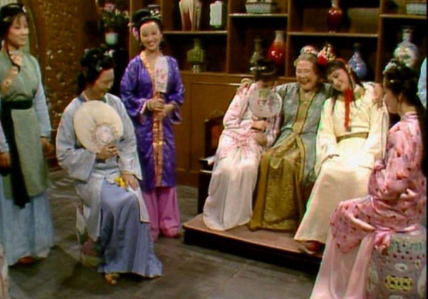
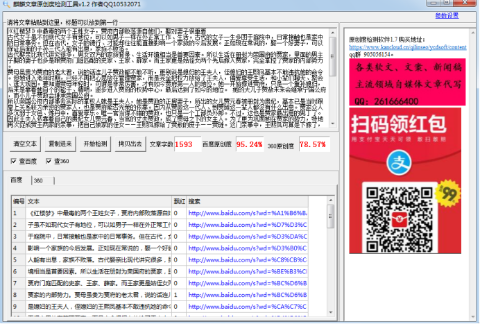

《红楼梦》中最毒的两个王姓女子，贾府内部败落源自她们，娶对妻子很重要
古代女子虽不如现代女子有地位，可以如男子一样在外正常工作、生活。古代的女子一生多困于庭院中，日常接触也是家中的日常事务。但在古代，女子的德行、才能却往往能直接影响一个家族的今后发展。正如现在常说的，娶一个好妻子，可以保证后面的子孙三代人能有出息，家族不败落。
古代娶亲比现代讲究很多，男女双方的家族背景、生活环境相当是首要因素。所以生活在册封为荣国府的贾家，里面的男主子娶的妻子也多是跟贾府门庭匹配的史家、王家、薛家。而王家更是姑侄女两个先后嫁入贾家，完全掌控了贾家的内部势力。

贾母虽贵为贾府的老太君，说的话连儿子贾政都不敢不听，更别说是媳妇的王夫人，侄媳妇的王熙凤基本不敢违抗她的命令。但她进入老年时期，已经不再把心思放在管理贾家，而是完全把权力放给了王夫人，偏爱享受生活，和小辈们聊天、聚会、逛大观园。要知道贾母年轻时，可谓是非常厉害，才有如今贾府第一人的地位。她一开始嫁进贾府，只是一个重孙媳妇，后来是靠着她自个的能干、精明，逐步进入贾府的权势中心，最后达到了如今的地位。 她的大儿子贾赦未来会继承宁国公府，而小儿子贾政会继承荣国公府。
所以荣国公府内部事务实际的掌权人就是王夫人，她是贾政的正房妻子，所出的女儿贾元春被册封为贵妃，基本已是当时跟皇上关系较为亲密的贾家人，也是贾府能否光荣的依靠。因为从贾政这一代人、到贾琏这一辈人都没有什么出息。贾家众人多沉溺于女色、炼丹中，喜爱享乐。唯一官当得不错的贾政，也只是一个工部员外郎。不过，这也是贾家最出息的男丁了。
因此王夫人依靠着自己的贵妃女儿贾元春、当官的丈夫贾政，成了贾母之下的女主人。为了更为巩固她在贾家的势力，特地再次促成贾王两家的亲事，把自己娘家的侄女——王熙凤嫁给了贾赦的庶子——贾琏。这门亲事中，王熙凤可算是下嫁了，因为贾琏的生母都无可考究，或许生母的地位连姨娘都比不上。而贾琏本人也是没有任何出息，官是捐的，整天沉溺于女色中。
至于王熙凤为何会同意这差距如此大的婚事。一则是贾琏是贾赦唯一的儿子，如果未来贾赦的正房妻子——邢夫人没有生儿子，那么贾琏有着很大可能成为贾赦之后的宁国公的主人。二则是她的亲姑姑——王夫人在贾家地位非常之高，她嫁进贾府不会遇到什么折磨，会时刻得到王夫人的庇护。
这也是为什么书中开头，本是邢夫人的儿媳妇王熙凤却如同王夫人的儿媳妇一样扎根在荣国公府。王熙凤夫妻二人更是把家安在了荣国府，两人更是成为了王夫人得力人手，为其效力。
身处权力的核心地位，王家两姑侄也是把自个放在高高在上的地位，对于下人、外面平民的生死完全不放在心上。死在王夫人的丫鬟更是非常之多，本性可谓是残酷、虚伪之极。看到丫鬟金钏与宝玉走得过近，随意谈笑，直接一巴掌过去，把金钏给扔出府，导致金钏不堪受辱选择跳井，告别人世。
得知这个消息，王夫人根本没有任何悔恨之情，直接跟流泪跟宝玉撒谎说，她之所以打金钏是因为金钏打扫时，不小心打碎了她一件心爱之物，她愤怒之下才打了她。谁知这丫鬟如此烈性，受不了这点委屈。与宝玉关系较为亲密的晴雯也是遭到了她的迫害，原本还有一丝生机，却被她不顾晴雯的重病，直接将晴雯撵出府，当晚死去。
比起自个姑姑把手放在贾家的内宅中，王熙凤却把手伸到外面，身为贾家中贾母、王夫人之下的第三人，她手中的权势非常之大，是贾家的当家大管家。本是大家出身的她，却对钱财之物看得如此之重。或许，在她未嫁进贾家之前，王家早已败落，才让她对钱财如此渴望。竟敢向外私放债收高利息。利用手中的权势为别人办事，收受钱财。完全不把人命放在心上。
小编认为，贾府的败落是完全从内里开始的，三代的男丁都没有能把门户撑起来的。娶的妻子眼光不是局限在男主子与丫鬟之间的关系，就是一心敛财、不顾家族安危的。所以娶对妻子真的很重要，至少生出孩子，能把孩子教得有出息。
